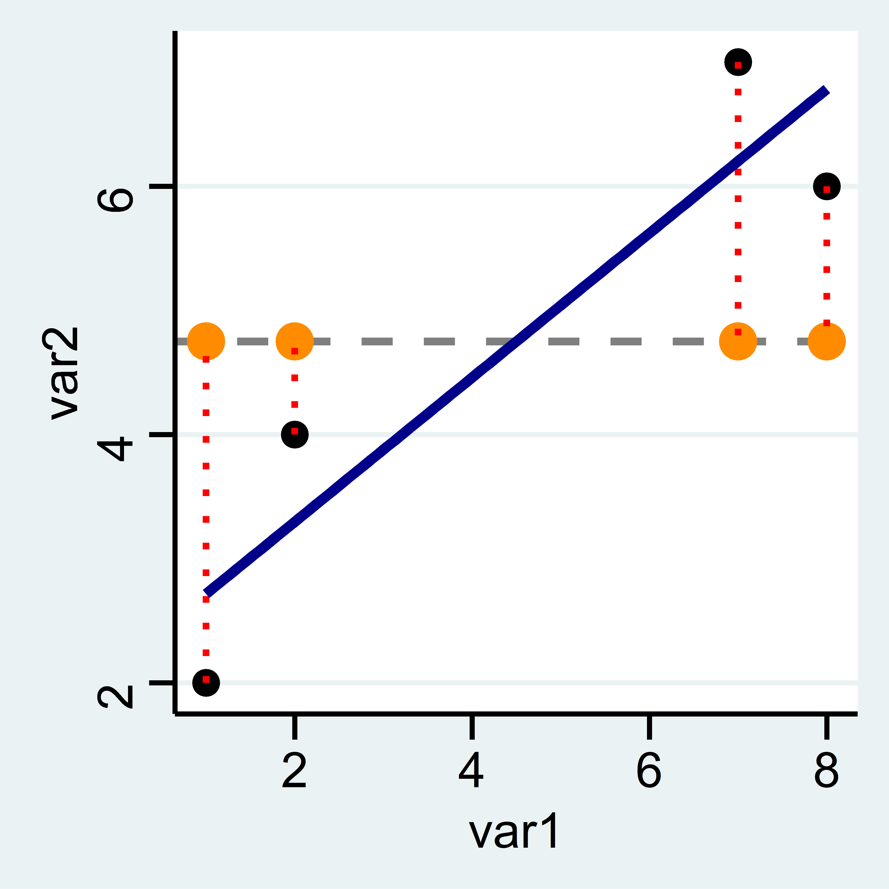
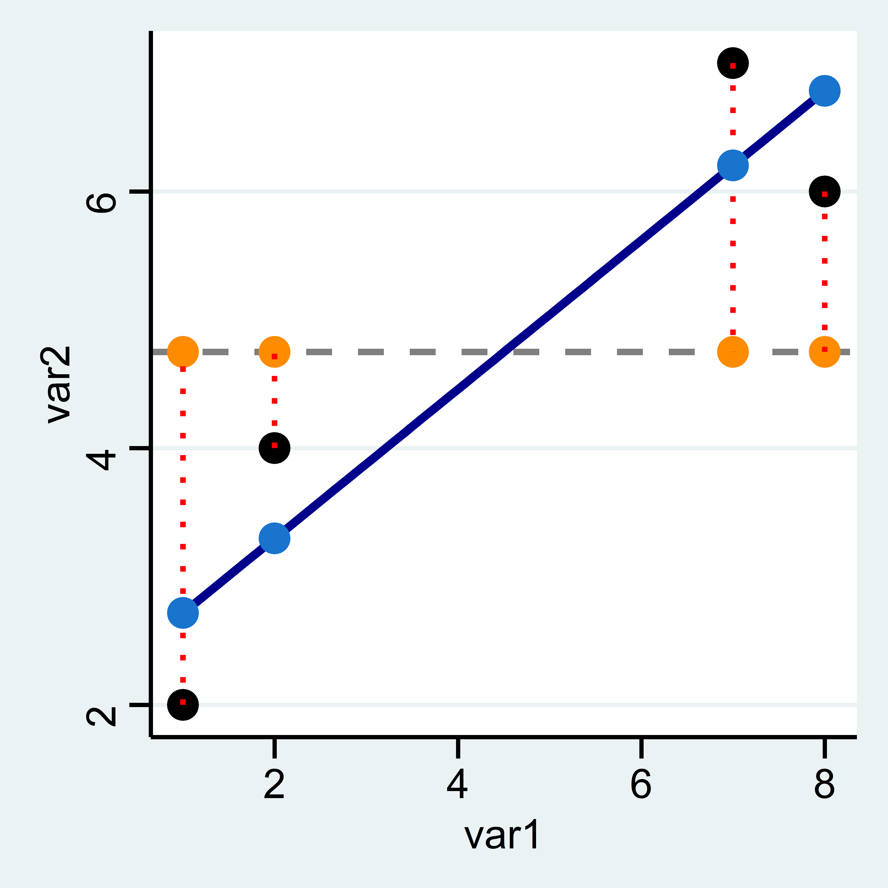
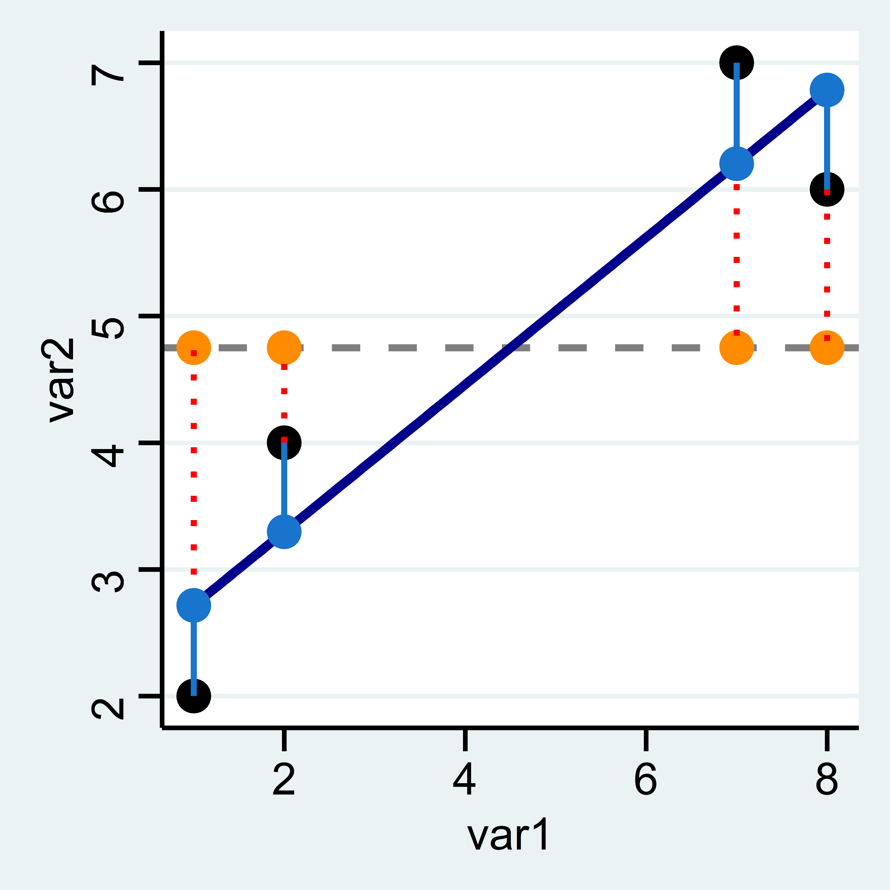

Die Minimierung erledigt reg für uns. Hier geben wir zuerst das Merkmal an, das auf der y-Achse liegt (die abhängige Variable) und dann das Merkmal für die x-Achse (unabhängige Variable) an. Ein positiver Wert unter var1 bedeutet, dass unsere Gerade von links nach rechts ansteigt und ein negativer eine fallende Linie bedeuten würde. Der Wert unter var1 gibt an, um wieviel sich die Gerade pro “Schritt nach rechts” nach oben/unten verändert. Die Gerade steigt also pro Einheit von var1 um 0.5810811:
In unserer Grafik sieht diese Gerade so aus:  ### Vorhergesagte Werte
Wie hoch ist nun der vorhergesagte Wert auf Basis der blauen Gerade?
Die vohergesagten Werte aus reg var2 var1 entsprechen einfach der Summe aus dem Wert unter Intercept und dem Koeffizienten neben var1 multipliziert mit dem jeweiligen Wert für var1.4
reg var2 var1, noheader
##
##
## . reg var2 var1, noheano variables defined
## r(111);
##
## end of do-file
## r(111);\[\texttt{Intercept} + 0.5811 \times \texttt{var1}\]
Für die erste Zeile ergibt sich also folgender vorhergesagter Wert: 2.1351+0.5811*1= 2.7162
Also könnten wir mit gen die vorhergesagten Werte berechnen:
Die vorhergesagten Werte können wir auch mit predict berechnen und in einer neuen Variable reg_vorhersagen ablegen:
## var1 var2 mean_var2 m_abw m_abw2 reg_vorhersagen
## 1 1 2 4.75 -2.75 7.5625 2.716216
## 2 2 4 4.75 -0.75 0.5625 3.297297
## 3 7 7 4.75 2.25 5.0625 6.202703
## 4 8 6 4.75 1.25 1.5625 6.783784Die Grafik zeigt wie Vorhersagen auf Basis des Regressionsmodells aussehen: Sie entsprechen den Werten auf der blauen Geraden (der sog. Regressionsgeraden) an den jeweiligen Stellen für var1.

Wir können erkennen, dass die hellblauen Punkte (also die Vorhersagen des Regressionsmodells) deutlich näher an den tatsächlichen Punkten liegen als die orangen Vorhersagen auf Basis des mean.
Trotzdem sind auch die hellblauen Punkte nicht deckungsgleich mit den tatsächlchen Werten. Es gibt also auch hier wieder Residuen, also Abweichungen des beobachteten vom vorhergesagten Wert. Wir können diese per Hand berechnen als Differenz zwischen dem tatsächlichen und dem vorhergesagten Wert:
Oder wir können Sie mit predict neue_variable , residuals erstellen:
## var1 var2 mean_var2 m_abw m_abw2 reg_vorhersagen res p_res
## 1 1 2 4.75 -2.75 7.5625 2.716216 -0.7162162 -0.7162162
## 2 2 4 4.75 -0.75 0.5625 3.297297 0.7027027 0.7027027
## 3 7 7 4.75 2.25 5.0625 6.202703 0.7972973 0.7972973
## 4 8 6 4.75 1.25 1.5625 6.783784 -0.7837838 -0.7837838Hier sind die Residuen für p_res als hellblaue Linien eingezeichnet:

Wie groß ist die Summe der Residuen für lm?
Um zu beurteilen, um wieviel besser unsere Gerade aus reg die Werte vorhersagt kann als der mean können wir die Summe der quadrierten Residuen vergleichen. Dazu quadrieren wir also die Residuen:
## var1 var2 mean_var2 m_abw m_abw2 reg_vorhersagen res res2
## 1 1 2 4.75 -2.75 7.5625 2.716216 -0.7162162 0.5129657
## 2 2 4 4.75 -0.75 0.5625 3.297297 0.7027027 0.4937911
## 3 7 7 4.75 2.25 5.0625 6.202703 0.7972973 0.6356830
## 4 8 6 4.75 1.25 1.5625 6.783784 -0.7837838 0.6143170Dann können wir die Summen der quadierten Abweichungen aus der Mittelwertregel und dem Regressionsmodell vergleichen:
dis 7.5625+0.5625+5.0625+1.5625 // abw2 aus Mittelwertsregel
##
##
## . dis 7.5625+0.5625+5.0625+1.5625 // abw2 aus Mit> wertsregel
## 14.75dis 0.5129657+0.4937911+0.6356830+0.6143170 // res2 aus regressionsmodell
##
##
## . dis 0.5129657+0.4937911+0.6356830+0.6143170 // > 2 aus regressionsmodell
## 2.2567568Zum Beispiel können wir uns fragen, um wieviel sich die Summe der quadrierten Residuen verringert wenn wir statt des mean unser reg-Modell verwenden:
Wenn wir diese Veränderung ins Verhältnis mit dem “Ausgangswert”, also den Residuen aus der Mittelwertregel setzen, dann erhalten wir das \(R^{2}\) für unser reg-Modell. Dieses gibt die prozentuale Verringerung der Residuen durch das reg-Modell im Vergleich zur Mittelwertregel an:
Unser Regressionsmodell kann also 84,7% der Streuung um den Mittelwert erklären. Dieser Wert wird auch als \(R^2\) bezeichnet. Im Regressionsoutput können wir das \(R^2\) oben rechts unter R-squared ablesen.
Außerdem sehen wir oben links in der Spalte SS die “Sum of Squares”. Hier finden wir auch die Werte von oben wieder: unter Total ist die Summe der quadrierten Abweichungen der beobachteten Werte vom arith. Mittel angegeben (14.75, sozusagen die Summe der m_abw2 von oben). Residual gibt die Summe der Abweichungsquadrate zwischen den beobachteten Werten und den vorhergesagten Werten der Regression (2.256.., Die Summe von res2).
Die Option noheader macht den Output von reg etwas übersichtlicher.↩︎